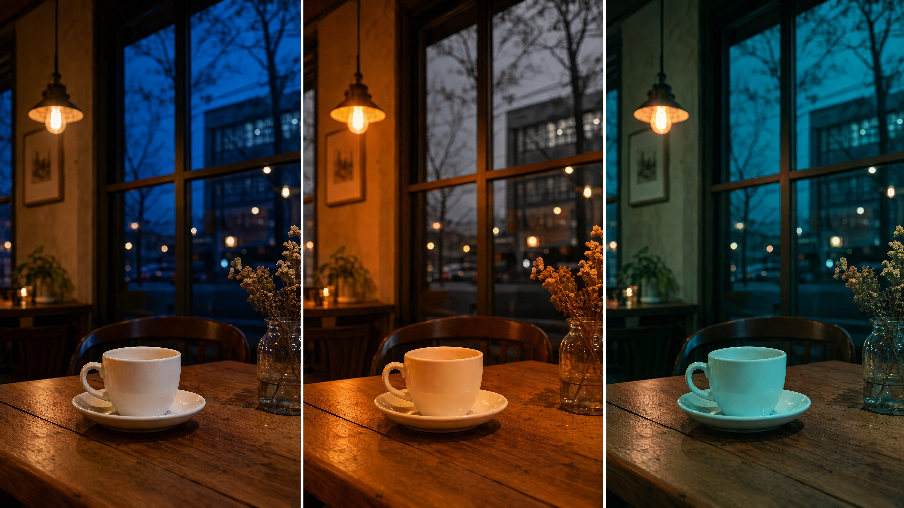
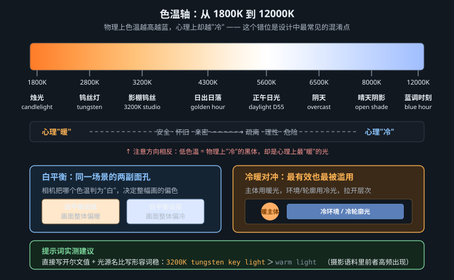

把“暖一点、冷一点”的模糊感觉，改写成光源、白平衡与材质共同作用的可控系统

相关色温（CCT）用开尔文标记光的综合色貌。它借用了黑体辐射：一个理想、完全吸收辐射的物体被加热后，其辐射光谱随绝对温度连续变化。温度较低时可见部分偏红橙；温度升高，辐射峰值向短波移动，综合色貌趋向白、再偏蓝。现实中的日光和多数灯并非理想黑体，所以准确说法是“与某一黑体色貌最接近的相关色温”。
这解释了一个常见反直觉：高 K 的蓝光在物理参照上更“热”，却在视觉语言里被称为“冷”。生理上，蓝光更容易激活含黑视素的视网膜神经节细胞，与清醒和昼夜节律调节有关，并不等于让身体产生寒冷；知觉上的冷暖主要来自经验联想——火焰、烛光、熟食与皮肤被归入“暖”，阴影、冰雪、阴天和远天被归入“冷”。再加上视觉系统会做色适应，同一张白纸在烛光与天光下仍被我们判断为白色。于是，色温是物理尺度，“冷暖”却是生理适应、材料记忆与文化编码共同形成的叙事标签，两者不能混用。
| 典型光源 / 环境 | 近似色温 | 画面线索与使用提醒 |
|---|---|---|
| 蜡烛 | 1800K | 强烈琥珀橙，亮度低、衰减快；适合近距离局部照明 |
| 钨丝灯 | 2800K | 连续光谱、肤色通常自然；比烛光更中性 |
| 日出 | 3000K | 长路径大气散射削弱蓝光，但颜色随云量与太阳高度变化 |
| 正午日光 | 5600K | 摄影中的常用日光基准，不等于必然“冷” |
| 阴天 | 6500K | 大面积柔光，蓝感常比直射日光明显 |
| 晴天阴影 | 8000K+ | 主要接收蓝天散射光；与受日照区域可形成强烈冷暖分区 |

两个光源都标 4000K，并不意味着显色相同。色温只描述综合色貌，不描述各波段是否齐全；连续光谱的灯与存在尖峰、缺口的 LED 可以同为 4000K，却让红布、肤色和金属涂层呈现完全不同的结果。需要判断材料颜色时，还要看显色指数、光谱功率分布与相机传感器响应。
光源色温说明“照进场景的光是什么颜色”，白平衡则说明“成像系统把哪种光校正为中性”。相机设为 3200K，是在假定现场主光为钨丝灯并抵消其橙色；此时混入的 5600K 日光会显蓝。反过来，相机设为 5600K，钨丝灯就保留为橙色。创作时应把两者写成一对：光源色温建立物理原因，白平衡决定最终偏色，而不是在后期随意盖一层双色滤镜。
| 光源 | 白平衡基准 | 结果 | 适合的叙事用途 |
|---|---|---|---|
| 3200K 钨丝灯 | 3200K | 白物体接近中性，肤色自然 | 可信的室内纪实 |
| 3200K 钨丝灯 | 5600K | 橙色被保留并加强 | 记忆、亲密、闷热或危险 |
| 5600K 日光 | 3200K | 窗外与日光照射面显蓝 | 室内外时间与空间分离 |
| 8000K+ 晴天阴影 | 5600K | 阴影保持蓝色，日照面偏暖 | 自然形成的冷暖层次 |
下面这条提示词用数值锚定光源，而不是只写 warm light：
a watchmaker adjusting a brass movement at his bench, a narrow 1930s workshop at night, a single 3200K tungsten desk lamp from camera left, hard-edged falloff, daylight-balanced 5600K capture so the lamp remains amber, oxidized brass gears, scratched dark wood, matte wool sleeves, contemporary editorial documentary photography, restrained film grain, 50mm lens, f/2.8, eye-level medium shot, horizontal magazine spread, clear negative space on the right
模型：MJ v8.1 · 画幅 3:2 · stylize 100 · 无负面词
3200K tungsten desk lamp 同时给出光源类型和可检索的摄影语义，daylight-balanced 5600K capture 决定橙色不被校正；方向与衰减塑造空间，黄铜和木材提供可接住暖色的材质。对 MJ 而言，开尔文不是精密光谱模拟参数，而是训练描述中的强语义锚点：warm light 可能落到夕阳、壁炉、金色调色或暖肤色等多个分布，3200K tungsten 则把结果收窄到摄影棚钨丝灯的综合色貌。因此数值有效，但不能期待相差 100K 就产生可测量变化；要与光源名称、白平衡和材质一起写。
先固定光源种类与 K 值，再固定白平衡，最后调整饱和度。若第一步就写“cinematic warm and cool lighting”，模型可能同时改变环境、服装和后期调色，你将无法判断偏色来自哪里。
青与橙位于常见色相环的近互补位置，能提供清楚的色相分离；同时，人类皮肤的血红素与黑色素使多数肤色集中在橙红区域，把背景推向青蓝便能在不大幅提高明暗反差的情况下突出人物。商业影像爱用它，不是因为“电影感”这个抽象标签，而是因为它同时保护肤色、分离空间，并适配夜景、金属和天空等常见环境。
它也极易成为陈词滥调：给所有阴影灌青、给所有高光灌橙，会让白衬衫失去中性，肤色像塑料，场景看不出真实光源。精炼用法有四点：让颜色有可见来源；控制面积而非平均二分；让青色在蓝绿之间轻微漂移；保留一小段中性色作为视觉基准。更重要的是，综合色貌可以互补，局部材质不必互补——皮肤可保持低饱和，青色交给玻璃反射、空气雾与背景墙。
a night-shift paramedic closing an ambulance door in a rain-soaked service alley, cyan-green fluorescent spill from the garage behind, one small 3000K practical lamp grazing the face from frame right, wet asphalt with broken reflections, natural low-saturation skin, brushed aluminum and translucent raincoat, neo-noir editorial photography without heavy color grading, fine-grain color negative look, 35mm lens, f/2.8, chest-height three-quarter view, 16:9 campaign key visual, dark negative space at upper left for copy
模型：FLUX.2 · 1536 × 864 · guidance 3.5 · 28 steps
车库荧光溢光承担青色，画内实景灯承担橙色，因果链可见；natural low-saturation skin 阻止人物被整体橙染，broken reflections 让两种颜色在湿地上相遇但不均匀混合。用途约束提前规定文案区，避免颜色对比把整个画面塞满。
这句话按明暗区域机械分色，没有说明灯从哪里来。模型容易把它解释为全局分级：暗部无论材质都变青，亮部无论光源都变橙。改成“青色车库灯照背景、3000K 实景灯擦过面部”，颜色就从后期效果变成场景事件。
常规语法把暖光连接到家、食物、身体与庇护，把冷光连接到距离、制度、夜晚与未知。它有效，是因为颜色与场景经验绑定，而非橙色天然善良、蓝色天然危险。叙事设计应至少同时控制三件事：角色所在区域的色温、角色朝向的区域色温、两者之间是否存在可跨越的边界。这样冷暖才能表达选择，而不只是装饰。
反写能避免俗套。冷色可以代表安全：洁净的月光出口、清醒的清晨、稳定的控制室；暖色也可以代表威胁：失火房间、审讯灯、过热机房。反写仍需证据支持——让材质状态、人物动作和光源位置共同确认意义，否则观众只会把它当作错误白平衡。
另一个翻车方式是用色温替代明暗设计：把安全区染暖、危险区染冷，却让两区亮度、边缘和空间位置完全相同。观众先读取明暗与构图，再读取色相；若叙事色与视觉层级冲突，颜色只会成为噪声。更稳妥的方法是先用光位和曝光建立注意力顺序，再让色温说明区域性质，并让一个小面积异色光落在角色身上，提示其处境正在改变。
a child standing inside an overheated roadside diner, reaching toward an open doorway that leads to quiet blue dawn, violent 2400K heat-lamp light behind the child, soft 7000K skylight wrapping the face from outside, greasy red vinyl, sweating glass, cool damp concrete beyond the threshold, restrained magical-realist film still, photochemical color response, 40mm lens, f/4, low eye level, doorway forming a central frame, widescreen story beat, preserve readable warm-interior versus cool-exit separation
模型：Seedream 5 · 16:9 · 2K · prompt adherence 0.75
这里把暖色从“家”改写为压迫：overheated、油腻乙烯基与凝水玻璃提供热的材料证据；7000K 天光则通过柔和包裹与安静清晨成为安全出口。镜头让门框成为明确边界，人物伸手的动作把冷暖差转化为叙事方向。
低显色光最重要的特征并非“颜色浓”，而是光谱不连续。低压钠灯几乎把能量集中在黄色窄带，红、绿、蓝物体都只能反射它们恰好能反射的那一点波段，综合色差被压扁；高压钠灯光谱稍宽，但仍会严重改写肤色。霓虹灯与气体放电灯由若干谱线构成，颜色取决于气体和荧光涂层。所谓 UV 黑光主要发出近紫外线，画面中可见的亮色往往来自染料、牙齿、纤维或矿物被激发后的荧光，而不是紫外线本身“照成紫色”。
| 光源 | 光谱机制 | 材料失真 | 提示词应写什么 |
|---|---|---|---|
| 低压钠灯 | 接近单色的黄光 | 综合色差坍缩，红绿难分，肤色蜡黄 | near-monochromatic low-pressure sodium, collapsed color separation |
| 霓虹 / 放电灯 | 离散发射谱线 | 某些颜料异常明亮，另一些近乎发黑 | 写明招牌颜色、照射方向与被照材料 |
| UV 黑光 | 近紫外激发可见荧光 | 荧光材料自发亮，普通材料仍暗 | 写明会荧光的油墨、纤维、矿物或体液痕迹 |
a forensic technician lifting a fabric sample in a sealed nightclub after closing, a handheld 365nm UV-A inspection lamp from below, faint violet spill only near the fixture, no ambient fill, fluorescent detergent fibers glowing blue-white, security ink glowing green, ordinary black cotton remaining dark, procedural documentary photography, clinically restrained color, 60mm macro lens, f/5.6, over-the-shoulder close shot, training-manual illustration, preserve material-specific fluorescence and deep neutral shadows
模型：Nano Banana Pro · 4:3 · 2048 px · reference-free generation
这条提示词把“紫色夜店”改成材料实验：365nm 指定 UV-A 检查灯，只有灯具附近保留微弱紫色溢光；洗涤剂纤维与防伪墨水分别发出可见荧光，普通黑棉保持暗。模型若把所有物体统一涂紫，说明它忽略了激发—发射机制，应减少夜店风格词并再次强调 material-specific fluorescence。
生成前依次回答：光源的连续或离散光谱是什么；它的方向与面积在哪里；白平衡以谁为中性；哪些材料会反射、吸收或荧光；冷暖承担什么叙事关系。五项都能回答，色彩才是可复现的场景设计；只能回答“想要蓝橙电影感”，得到的通常只是不可调试的滤镜。
Color Script（色彩脚本）决定颜色何时变化，LUT决定一组输入颜色如何被稳定映射；前者是叙事设计，后者是变换工具。先把全片按情节点压成 8–16 个缩略色块，记录每段的主导色、肤色保护区、黑位、最高饱和色及其面积。相邻镜头不必同色，但变化必须有方向：例如“中性日常 → 冷青失控 → 小面积琥珀恢复”，观众会把颜色变化读成事件，而不是素材来源不同。
| 节点 | 画面目标 | 光源 / 白平衡机制 | LUT 只负责什么 | 失败信号 |
|---|---|---|---|---|
| 建立 | 低饱和中性，肤色可信 | 5200K 主光，白平衡 5000K | 统一黑位与高光滚降 | 不同镜头白墙一会儿绿一会儿粉 |
| 转折 | 冷青占比上升，暖点消失 | 可见屏幕光接管，固定白平衡 | 轻推阴影色相，不制造光源 | 人物皮肤也被等量染青 |
| 收束 | 琥珀只回到主体与出口 | 实际暖光进入场景 | 匹配前后镜的综合色貌 | 全画变橙，冷背景层次消失 |
工程顺序必须是先归一、后造型：把各镜曝光、白平衡和输入色彩空间校准到共同基准，再套创意 LUT，最后按镜微调。LUT 是固定的 RGB 查表，不知道画面中哪块是皮肤、天空还是产品色；强度过高会压坏肤色、剪掉高光，也无法修复生成阶段已经漂移的灯位。应保留中性灰、白物和肤色作为镜间探针，并在示波器与实际观看两端验收。
[COLOR-SCRIPT STATE — shot 06] story beat: the control room loses authority; dominant hue shifts from neutral steel to cyan-green over six seconds, caused by the visible emergency displays replacing the 5000K ceiling light; keep skin low-saturation and retain one neutral white badge as a reference, black level and highlight roll-off matching adjacent shots, no global teal wash
套 LUT 后才出现色块断层，先降低强度并检查输入色彩空间是否一致；不套 LUT 就无法把两镜拉近，通常是源帧白平衡或光源逻辑差得太远，应回到生成端重做；单镜漂亮、连起来像彩虹，是 Color Script 没有规定段落主导色和转折点。调色时一次只比较相邻三镜，并保留未经 LUT 的版本，才能判断问题在源头、归一化还是创意映射。